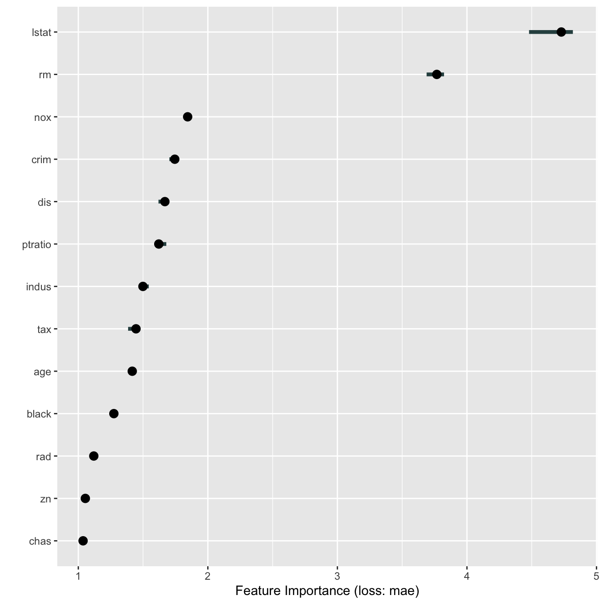

The iml package can now handle bigger datasets. Earlier problems with exploding memory have been fixed for FeatureEffect, FeatureImp and Interaction. It’s also possible now to compute FeatureImp and Interaction in parallel. This document describes how.
First we load some data, fit a random forest and create a Predictor object.
set.seed(42) library("iml") library("randomForest") #> randomForest 4.6-14 #> Type rfNews() to see new features/changes/bug fixes. data("Boston", package = "MASS") rf <- randomForest(medv ~ ., data = Boston, n.trees = 10) X <- Boston[which(names(Boston) != "medv")] predictor <- Predictor$new(rf, data = X, y = Boston$medv)
Parallelization is supported via the {future} package. All you need to do is to choose a parallel backend via future::plan().
library("future") library("future.callr") # Creates a PSOCK cluster with 2 cores plan("callr", workers = 2)
Now we can easily compute feature importance in parallel. This means that the computation per feature is distributed among the 2 cores I specified earlier.
imp <- FeatureImp$new(predictor, loss = "mae") library("ggplot2") #> #> Attaching package: 'ggplot2' #> The following object is masked from 'package:randomForest': #> #> margin plot(imp)

That wasn’t very impressive, let’s actually see how much speed up we get by parallelization.
bench::system_time({ plan(sequential) FeatureImp$new(predictor, loss = "mae") }) #> process real #> 4.33s 2.45s bench::system_time({ plan("callr", workers = 2) FeatureImp$new(predictor, loss = "mae") }) #> process real #> 2.08s 5.05s
A little bit of improvement, but not too impressive. Parallelization is more useful in the case where the model uses a lot of features or where the feature importance computation is repeated more often to get more stable results.
bench::system_time({ plan(sequential) FeatureImp$new(predictor, loss = "mae", n.repetitions = 20) }) #> process real #> 14.79s 7.41s bench::system_time({ plan("callr", workers = 2) FeatureImp$new(predictor, loss = "mae", n.repetitions = 20) }) #> process real #> 2.06s 7.5s
Here the parallel computation is twice as fast as the sequential computation of the feature importance.
The parallelization also speeds up the computation of the interaction statistics:
bench::system_time({ plan(sequential) Interaction$new(predictor) }) #> process real #> 17.3s 12.1s bench::system_time({ plan("callr", workers = 2) Interaction$new(predictor) }) #> process real #> 2.04s 9.96s
Same for FeatureEffects:
bench::system_time({ plan(sequential) FeatureEffects$new(predictor) }) #> process real #> 1.72s 901.27ms bench::system_time({ plan("callr", workers = 2) FeatureEffects$new(predictor) }) #> process real #> 7.62s 12.55s